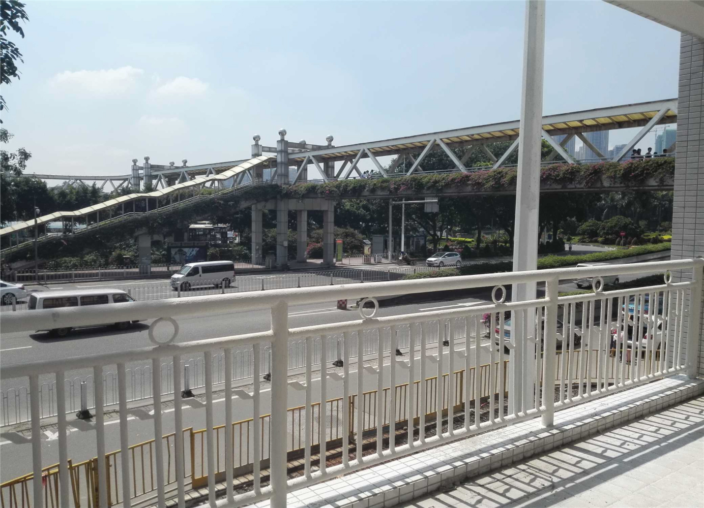

建科易检
检测系统
路桥管理
用户管理
/
退出登录
信息统计
项目信息统计
区域信息统计
项目管理
进行中项目
归档项目
报告管理
项目信息统计
区域信息统计
芳村客运站人行天桥
概况照片
桥梁病害
BCI评价
原始记录
报告
照片列表
选择图片
01.jpg
02.jpg
03.jpg
桥梁结构
芳村客运站人行天桥
主桥
demo
3#梯道
demo
4#梯道
demo
1#梯道
demo
2#梯道
K1
demo
K2
demo
K3
demo
K4
桥面系
上不结构
下部结构
3-1#盖梁
3-1#墩身
3-2#墩身
3-1#基础
4-2#基础

确认删除该图片
？
删除确认
取消